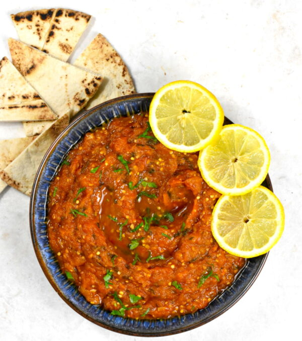
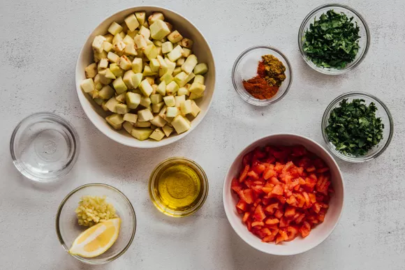
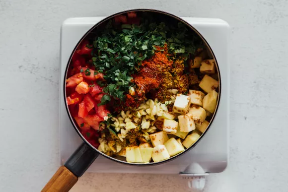
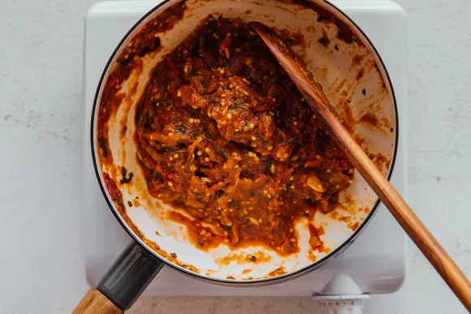
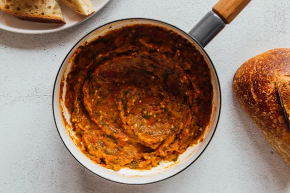

Moroccan Zaalouk (Cooked Eggplant and Tomato Salad)
Zaalouk is a delicious and nutritious preparation that can be served hot or cold.
Because eggplants and tomatoes are the stars of the dish,
we recommend buying organic ripe produce for the best flavor.
Ingredients:
- 1 large eggplant, peeled and chopped
- 4 large tomatoes, peeled, seeded, and chopped
- 3 cloves garlic, finely chopped
- 1/4 cup fresh cilantro, chopped
- 1/4 cup parsley, chopped
- 1 tablespoon paprika
- 1 tablespoon cumin
- 1 1/2 teaspoons salt
- 1/4 cup extra-virgin olive oil
- 1/3 cup water
- 1/8 teaspoon cayenne pepper
- 1 lemon wedge
- Extra-virgin olive oil
- 1 loaf crusty bread
Steps:
- Gather the ingredients.

- Combine eggplant, tomatoes, garlic, cilantro, parsley, paprika,
cumin, salt, oil, water, and cayenne in a large deep skillet or pot.
Cover and simmer over medium to medium-high heat for 30 minutes,
stirring occasionally.

- With the help of a spoon or potato masher, crush and blend tomatoes and eggplant.
- Add lemon wedge to the pot, if using. Continue simmering mixture,
uncovered, for 10 minutes.
The lemon will give a tangy nuance but is not necessary.
- The zaalouk is ready when liquids are reduced and mixture can be stirred into a heap in the center of the pan.

- Drizzle olive oil—or chile oil if you like spicy food. Serve with sliced crusty bread.

back to top
Home